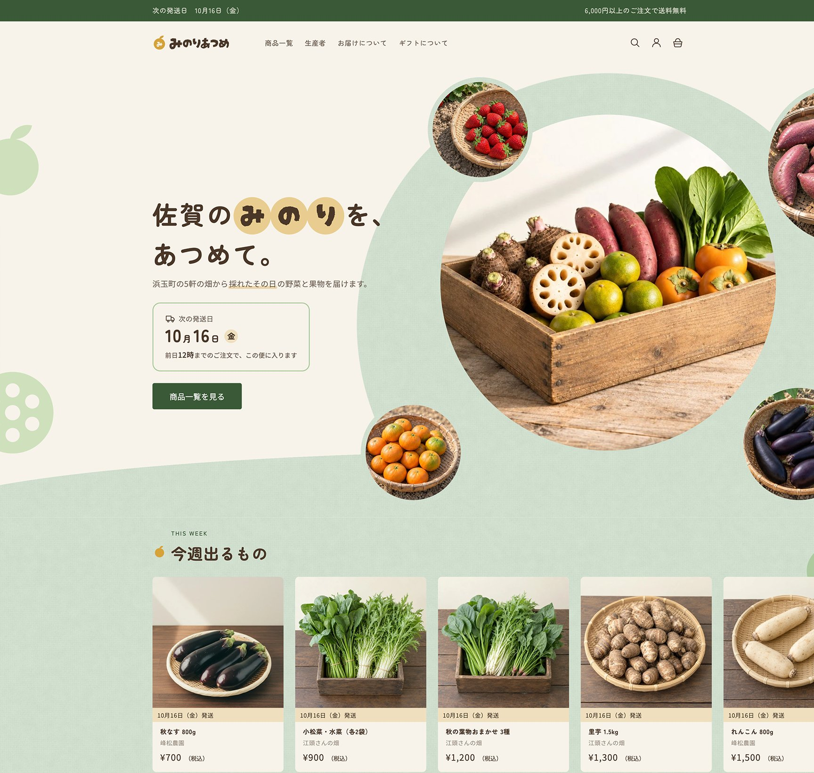
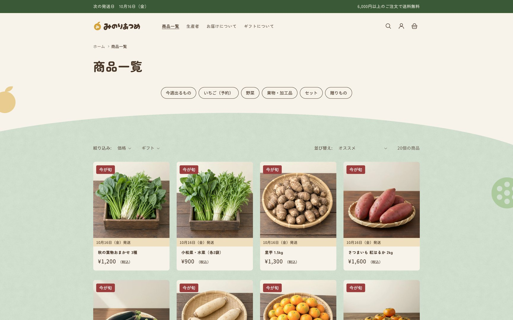
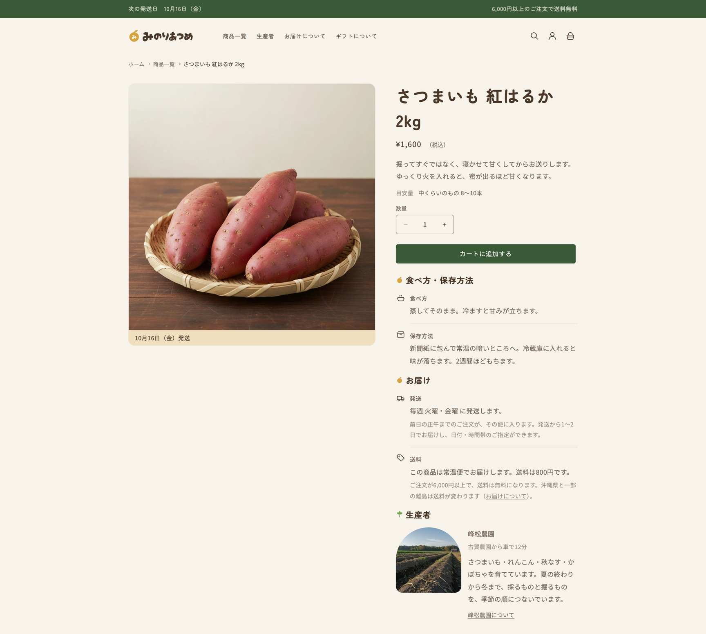
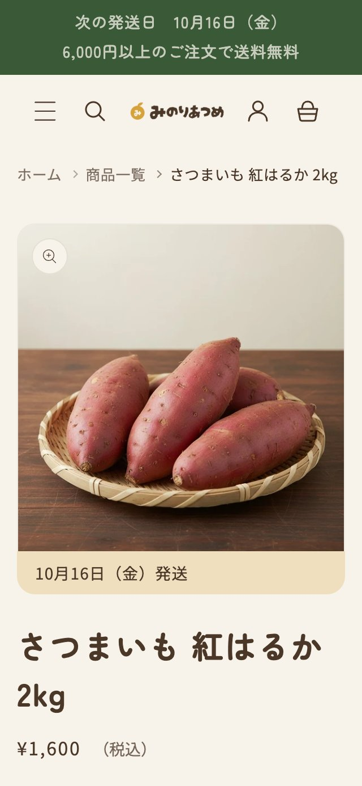
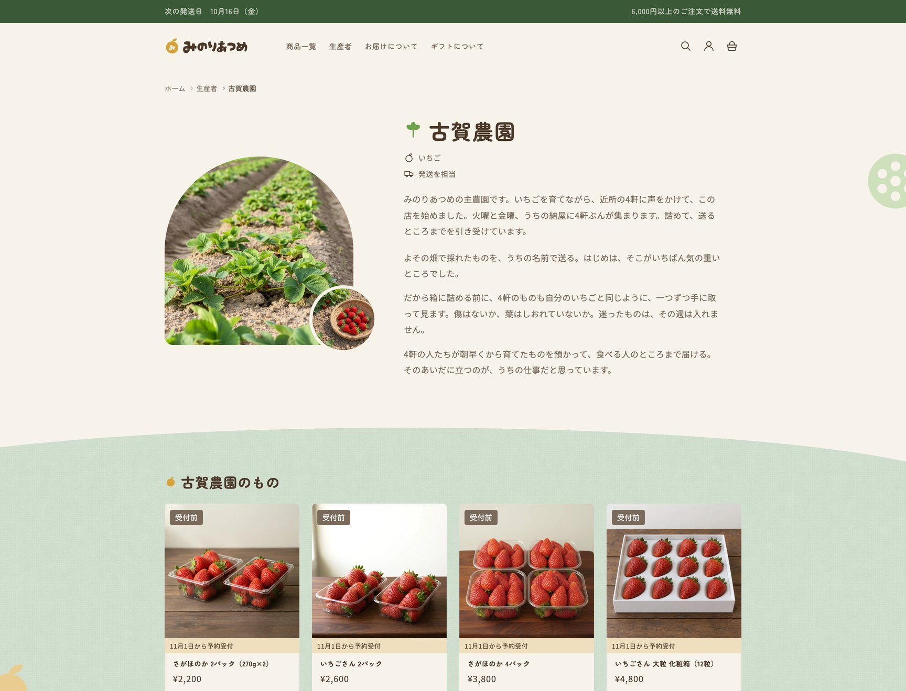
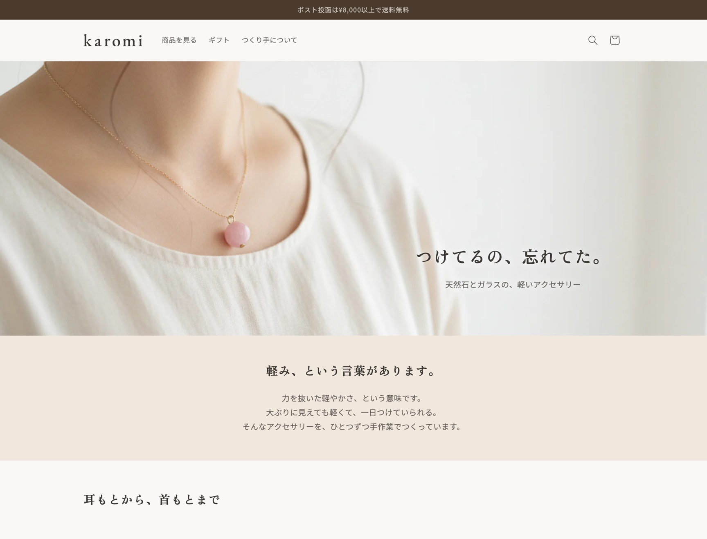
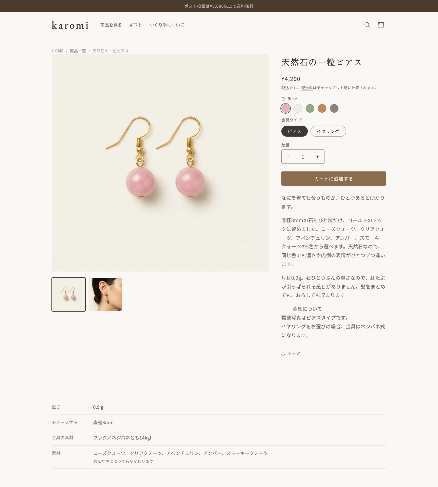

5つの丸で、主農園と近隣の農家4軒を表しています。そのすぐ横に、次の発送日と締め切りを置きました。
みのりあつめ佐賀の産直ネットショップ
- クライアント
- 架空（ヒアリングを想定した自主制作）
- 業種
- 佐賀の産直ネットショップ。主農園1軒と近隣の農家4軒の野菜・果物・加工品を扱う
- 背景
- 自分でネットショップを作って運営していたが、見た目に自信が持てず、作り直したいという想定
- 担当範囲
- ヒアリング／要件定義／ページ構成の設計／デザイン／実装／商品データ登録／商品画像／掲載文章
- 制作期間
- 2026年9月〜10月（約5週間／別の仕事と並行）
- 使用技術
- Shopify（Dawnテーマ）／Liquid／HTML・CSS・JavaScript／Figma
- 規模
- 全11ページ／商品20点・生産者5軒／カスタムセクション8本
※写真はデモ用に用意した素材です。
人物像と販売の状況、抱えている困りごとを自分で設定し、そこから導いた課題を3つに絞って解きました。
「次はいつ出るのか」が分からず、一度買った人が戻ってこなかった
ヒアリングで、困っている相手は「比較して迷う人」ではなく「一度買ったあと離れてしまう人」だと分かりました。発送は週2回（火・金）と決まっているのに、それがどこにも出ておらず、いつ見に行けばいいのか分からない状態でした。
そこで、次の発送日をサイトのどこにいても目に入るようにしました。告知バー、ファーストビュー、商品カード、商品ページの4か所に、次の発送日と締め切りを常に表示しています。日付は「火・金に発送／前日正午締め」という決まりから自動で計算し、店主が入力するのは休む便と臨時の便だけです。
旬が終わった商品や予約前のいちごも非公開にせず、棚に残しました。「11月1日から予約」のように次の時期をバッジで示し、今は買えなくても、次に見に来る理由になるようにしています。
贈りものの相談が多いのに、受け止める場所がなかった
ヒアリングで、のし・メッセージカード・到着日の指定についての相談が多いと分かりました。
贈りもの専用のセット商品は作らず、同じ商品を「贈ることもできる」形で扱う設計にしました。専用セットを用意すると贈りものの棚が1点だけになり、かえって選べなくなるためです。贈れる商品には商品ページで「ギフト対応可」と示し、贈りものの棚にまとめています。のしとメッセージカードはカートでまとめて受け付け、贈れる商品が入っているときだけ入力欄が出ます。お届け希望日もカートで指定できます。
店主の願いは、売上より「来年も声をかけられること」だった
ヒアリングを重ねると、店主のいちばんの願いは、自分が声をかけて巻き込んだ近隣の農家に、来年も「今年もどうですか」と言える状態をつくることだと分かりました。主力のいちごはすでに売れていて、動いていないのは近隣の農家の野菜でした。そのため、成果を測る基準も店全体の売上ではなく、近隣農家の商品の注文点数に置きました。
生産者は雰囲気づくりではなく、商品を選ぶ理由として前に出しています。トップページの「つくる人」、商品ページの生産者欄（古賀農園から車で何分か）、生産者ごとの個別ページから、誰の畑のものかをたどれます。顔出しできない生産者がいる前提で、写真は全員を手元・畑・道具で統一しました。一人だけ顔がないと「隠している」ように見えますが、全員そろえれば「手仕事を見せている」に変わるためです。
デザインの考え方
見た目の判断は、ヒアリングで決めた印象（美味しい・安心・明るい）と、店名「みのりあつめ」から逆算して決めました。
「みのりをあつめる」を、丸で見せる
食品のサイトで「明るさ」をつくるとき、強い色や「今だけ」のような言葉に頼るとセールの売り場に近づき、食品で大事な「安心」とは逆に働きます。そこで、色の強さではなく形で明るさを出すことにしました。
ファーストビューは、最初は畑の写真を波線で切り抜いて組みました。しかし、どこの農家のサイトにも置けそうな絵で、店名ともコンセプトとも結びついていませんでした。そこで、店名と商品、生産者に共通するものを洗い出し、「みのりあつめ」から連想できる形を探しました。たどり着いたのが「丸＝みのり」です。
はじめは小さい丸を散らす案でしたが、そこから絞り込み、大きい丸1つのまわりに小さい丸4つを置く形に落ち着きました。作り直しは30回を超えています。決め手は、丸が5つという数が、この店の5軒の畑と重なったことでした。中心の大きい丸が主農園、まわりの4つが近隣の農家です。見出しの「みのり」も、1文字ずつ丸に入れています。
ファーストビューで決めた丸は、サイト全体の基調にしました。写真はアーチや丸で切り抜き、面と面の境目も直線ではなく楕円にしています。四角はできるだけ減らしましたが、ボタンのように押せるものだけは四角のまま残しました。押せない札は丸くしてあり、形を見れば押せるかどうかが分かります。
動きは「収穫」と「楽しさ」のために
ファーストビューを開くと、丸がひとつずつ順に現れます。畑からみのりをひとつずつ収穫していく様子を重ねました。この動きは、開いたときに1回だけ再生されます。
ほかの場所で動かしているのは、見出しと見せ場の3か所だけです。見せ場は、今週出るものの商品カード、つくる人の4軒、スクロールに合わせて言葉が流れる「想いの場所」です。少し弾む動きにして明るさを足しつつ、すべてを動かすとかえって読みにくくなるため、場所を絞りました。速さや弾み方は先に数値で決め、全ページでそろえています。自動で流れ続けるカルーセルのように、勝手に始まる動きは入れていません。

商品一覧商品カードに載せる印は、次の発送日の帯と旬の札の2つだけにしました。旬が終わった商品や予約前の商品も、札で理由と時期を示して棚に残しています。

商品ページ購入の判断に必要な情報を、上から順に並べています。写真の下に発送日、リード文の下に目安量、その先にお届けと送料、生産者、作物の話が続きます。購入に集中してもらうため、このページだけ装飾を外しました。

商品ページ（スマートフォン）スマートフォンでも、写真のすぐ下で次の発送日が分かる並びはそのままです。

生産者の個別ページ生産者ごとのページは、登録した情報から自動で作られます。顔は写さず、手元・畑・道具の写真で紹介しています。
制作プロセス
このページの2作品は、どちらもクライアントが架空です。そのため、まず人物像と販売の状況、制作の前提条件を自分で立てて文書に固定し、そこを動かさずに進めました。以下は2本で共通して回した手順です。
| 工程 |
やったこと |
残した資料 |
| ヒアリング・要件定義 |
困りごとと要望を聞き取り、今回やることと今回はやらないことの線を引く |
設計ブリーフ |
| 設計 |
載せる情報の優先順位を決め、ページ構成と回遊の導線を固める。配色・フォント・余白のルールをサイト全体で先に決める |
ワイヤーフレーム／サイト導線図／スタイルガイド／テーマ設定の対応表 |
| 実装 |
設計どおりに組み、標準機能で届かない部分だけをカスタムセクションにする。商品データの登録と掲載文章もこの工程 |
実装記録（決定事項・積み残し） |
| 公開前チェック |
表示崩れ、スマートフォンでの見え方、消し忘れ、購入から決済までの通し確認 |
チェックリスト |
ヒアリング・要件定義 聞いた要望をそのまま並べるのではなく、今回の目的に効くものと、あとに回してよいものを分けて線を引きます。ここで引いた線を、最後まで判断の基準にしました。
設計 ページ構成と見た目のルールは、実装に入る前に資料の形にしておきます。手を動かしながら決めると、ページごとに判断がぶれるためです。
実装 決定事項は1つのファイルにまとめ、そこを正としました。実装の途中で設計の前提が変わったときは、コードだけ直して終わりにせず、同じ日にワイヤーやスタイルガイド側も直します。あとから見て、どちらが正しいのか分からない資料を残さないためです。設計の資料に決めていない項目が見つかったときも、その場で埋めてから先へ進みます。セクションの余白がこれにあたり、いったん手を止めて全ページ分の基準を決めてから続きを組みました。
公開前チェック 自分で定めたチェックリストを最初から最後まで回し、直した項目は記録に残してから公開しています。
期日について 着手時に完成日を決め、日割りにして進めています。遅れが出たときは、日程を延ばす前に、今回やらなくてよいものを外せないかを先に考えます。
骨格から変える
Dawnは、カスタムセクションを足しても、ページの幅、余白、画像の形、区切りといった骨格が標準のままだと、ぱっと見はDawnのままに見えます。そこで、カスタムの本数より先に骨格を変えると決め、ワイヤーフレームの段階で「Dawnに見えないか」を確かめてから実装に入りました。
迷った点は、先に自分で答えを出し、そのあとで別の案と比べる順にしています。ファーストビューを30回以上作り直したのも、納得できる理由が見つかるまで決めなかったからです。
実装した機能
みのりあつめで実装した機能のうち、運営に関わる4つを紹介します。選ぶ基準は「ショップの運営者が、管理画面だけで自分で回せるかどうか」に置きました。産直は商品の入れ替わりが速いので、運営者が入力する量を減らすこと、そして入力し忘れても表示が壊れないことを特に重視しています。
1. 次の発送日の自動表示
ship_settings（メタオブジェクト）
課題
発送日は週に2回変わります。手で書き換える運用では、更新を忘れた時点で間違った日付が出てしまいます。
実装
「火・金に発送／前日の正午で締め切り」という決まりはコードに持たせ、次の発送日を自動で計算しています。運営者が入力するのは、休む便と臨時の便の日付だけです。表示は告知バー、ファーストビュー、商品カード、商品ページの写真の下の4か所で、すべて同じ計算結果を使っているため、場所によって日付が食い違うことはありません。ページが古いまま表示されて前の日付が残ることがないよう、開いた時点でJavaScriptが同じ決まりで計算し直しています。
2. 生産者のメタオブジェクト
producer（メタオブジェクト）
課題
生産者の情報は、20点の商品から何度も参照されます。商品ごとに書くと、写真や紹介文を変えるたびに全商品を直すことになります。
実装
生産者を1軒ずつ登録し、商品の側では「どの生産者か」を選ぶだけにしました。名前、写真、作っているもの、主農園からの距離、紹介文、読み物を持たせています。オンラインストアでの表示を有効にしたので、生産者ごとの個別ページはShopifyの標準機能で自動的に作られます。商品ページの生産者欄は複数の生産者を持てる形にしたため、4軒分が入るセット商品も、単品と同じ仕組みで表示できます。
項目は、表示を分ける必要があるものだけに絞りました。たとえば「顔出しの可否」は、全員を顔なしの写真で統一すると決めた時点で分ける必要がなくなったため、項目を作っていません。
3. 買えない商品を棚に残す札と、旬カレンダー
season（商品メタフィールド）
課題
季節の商品は、旬が終わると非公開にされがちです。しかし棚から消えると、「次はいつ出るか」という情報も一緒に消えてしまいます。
実装
商品に「旬の状態（今が旬／まもなく／受付前／今季終了）」と「旬の月」を持たせ、旬が終わった商品も非公開にせず棚に残しています。買えない商品は購入できない状態にしたうえで、札で理由と時期を示します。色で「今買えるかどうか」を、文字で「理由」を表す使い分けです。受付開始日を入れておくと、「11月1日から予約」のように次の時期が出ます。Dawn標準の「売り切れ」表示は「在庫なし」に変え、受付前や今季終了の商品には出しません。どちらも売り切れたわけではないためです。
トップページの旬カレンダーは、同じ「旬の月」のデータから月ごとに切り替えて表示しています。運営者が商品ごとに状態と月を選ぶだけで、札とカレンダーの両方が変わります。
4. カートの贈りもの欄
カートの専用入力欄
課題
のし、メッセージカード、到着日の指定についての相談が多い。ただし商品ページで受けると商品ごとに入力が必要になり、自宅用に買う人にとっては不要な欄が増えます。
実装
お届けの指定と贈りものの指定は、商品ごとではなく注文ごとに、カートでまとめて受けています。お届け希望日はご注文日の7日後から選べ、時間帯は5区分です。のしとメッセージカードの欄は、カートにギフト対応の商品が入っているときだけ表示されます。カートの合計の上には「あと◯円で送料無料です」を表示し、あと何を足せばよいかが分かるようにしています。
ほかに作ったもの
- ファーストビュー 丸の配置と、次の発送日のカードを自作
- 今週出るもの 自動再生しない、指で送る形の商品カルーセル
- 作物の話 商品ページの読み物。入力がない商品では、セクションごと表示されません
- 想いの場所 スクロールに合わせて言葉が流れる読み物
作らなかったもの
定期便は、産直では定番の手ですが見送りました。この店の課題は6〜10月の端境期で、中身が読めない時期に毎月届ける約束をすると、運営者が困ることになるためです。「次に何が出るかが分かる」ことで再訪をつくるほうが、この店の課題には合っていると判断しました。
保守について
CSSは新規ファイルに集約し、Dawn本体のファイルへの変更は5か所に絞りました。手を入れる前の素のDawnを記録しておき、どこを変えたかをいつでも一覧で確認できるようにしています。
karomiハンドメイドアクセサリーのネットショップ
- クライアント
- 架空（ヒアリングを想定した自主制作）
- 業種
- 天然石・ガラスのハンドメイドアクセサリー作家
- 担当範囲
- ヒアリングから実装、商品画像、掲載文章まで
- 制作期間
- 2026年7月〜8月（約1か月／別の仕事と並行）
- 規模
- 全7ページ／商品20点・67バリアント／カスタムセクション4本
※写真はデモ用に用意した素材です。
解いた課題
- 「ピアスをイヤリングに変えられますか」に、毎回メッセージで答えていた色と金具タイプの2軸でバリアントを設計しました。20のデザインを67のバリアントに整理し、商品ページで切り替えられるようにしています。
- いちばん多い質問は「金属アレルギーでも大丈夫か」だった答えをトップページ、商品ページ、よくある質問の3か所に置きました。場所ごとに、読み手が知りたい粒度で書き分けています。
- 本当の目的は「手数料を減らすこと」ではなかった願いは「ほかの作家と並ばず、自分の店として覚えてもらうこと」でした。そのため、価格や新着ではなく世界観から入る構成にしています。
実装したカスタムセクション
期間を指定するお知らせバー／商品スペック表／色でつながる関連商品／パンくずリスト

トップページファーストビューの一文からブランドの言葉へつなぎ、商品を見せる前に世界観を伝える構成にしました。

商品ページ色と金具を選ぶ導線を上部にまとめ、その下にスペック表、配送やお手入れの折りたたみ、特徴、関連商品と続きます。
できること・使えるもの
できること
Shopifyストアの構築
テーマの選定から商品・コレクション・バリアントの設計、決済や配送の設定まで、公開できる状態まで一通り組み立てられます。商品数が多い場合は、CSVでの一括登録・一括更新で対応します。
Dawnテーマのカスタマイズ
標準機能で足りない部分は、Liquidでカスタムセクションを新規に実装します。管理画面から文言・画像・表示件数を変更できる形で作るので、公開後の更新はご自身で行えます。
商品情報の設計
メタフィールド・メタオブジェクトを使って、素材やお手入れ方法といった独自の項目を、商品ページに構造化して表示できます。カラーバリエーションのスウォッチ表示にも対応します。
ページ構成とデザインの設計
ヒアリングをもとに、載せる情報とその優先順位を決めてワイヤーフレームに起こします。配色・フォント・余白のルールをサイト全体で先に定めてから実装に入るので、ページが増えても崩れません。
公開前の品質チェック
表示崩れ、スマートフォンでの見え方、テキストの消し忘れなどを、自分で定めたチェックリストで確認してから公開します。
使えるもの
Shopify（Dawnテーマ／Liquid／Shopify CLI）／HTML・CSS・JavaScript／Figma
対応できないこと
商品写真の撮影は承っておりません。撮影方法についてのご提案までは対応できます。
これまでの経歴
Web制作を学び始めたのは2025年6月、Shopifyに絞ったのは2026年1月です。それ以前は約15年、広告制作の進行・校正と、お客さまと直接やりとりする仕事をしてきました。
広告代理店とプロ野球球団では、新聞広告や印刷物の入稿設定・校正・進行管理を担当しました。決められた期日までに、誤りのない状態で公開まで持っていく仕事です。公開前に自分でチェックリストを回して確認する習慣は、このときについたものです。
広告代理店では求人広告の営業も担当し、依頼主から話を聞いて原稿に落とすところまでを一人で行いました。銀行の窓口・渉外、製薬会社のルート営業では、売って終わりではない継続的なお客さま対応をしてきました。ヒアリングから設計するという今の進め方は、ここでの経験が下地になっています。
Web制作の経験は長くありませんが、「聞いて、決めて、期日までに間違いなく形にする」という部分は、これまでやってきたことの延長にあります。
- 2025年6月 Web制作の学習を開始（HTML／CSS／JavaScript、Figma）
- 2025年10月 デザ研デザインコンテスト入賞
- 2026年1月 Shopifyの学習を開始、Dawnテーマのカスタマイズへ
- 2026年8月 ネットショップのデモストア「karomi」を公開
- 2026年10月 産直のデモストア「みのりあつめ」を公開